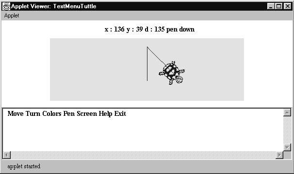
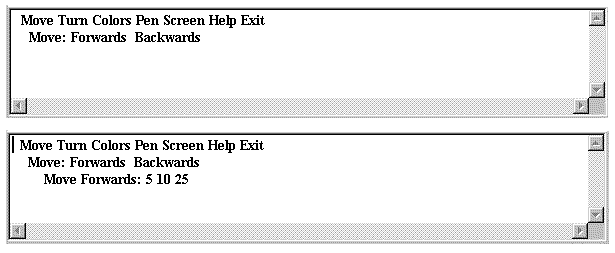
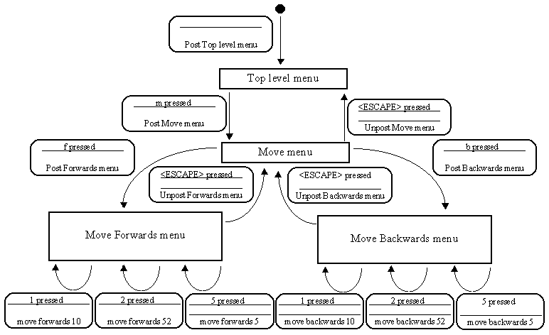

The instance diagram for the TextMenuTuttle applet does not differ significantly, apart from the names, from that of the SemiDirectTuttle given in Chapter 5. The appearance of the TextMenuTuttle interface when it is first launched is shown in Figure 7.2. An instance of the TextMenuTuttleInterface class is mounted at the bottom of the applet and it contains a TextArea component which is showing the top level menu. The capitalisation of the terms used on the menu indicate to the user how to operate it. For example pressing 'm' or 'M' on the keyboard will post the Move sub-menu, 't' or 'T' the Turn sub-menu, and so on.

Figure 7.2 The TextMenuTuttle interface, (with the drawing area reduced in height).
In the discussion which follows only the Move menu system will be described in detail, the operation and implementation of the other menus are essentially identical. Details of how to obtain the complete implementation can be found in Appendix B.
Pressing 'm' or 'M' when the top level menu is posted will post the Move menu whose appearance is shown in the top image of Figure 7.3. This menu has two visible options to move the tuttle forwards or backwards. It also has a third, invisible, option to cancel the Move menu and return to the top level menu which is activated by pressing the <ESCAPE> key. Pressing the 'f' or 'F' key when the Move menu is posted will cause the Move Forwards menu to be posted and likewise 'b' or 'B' will post the Move Backwards menu. The appearance of the Move Forwards menu is shown in the bottom image of Figure 7.3, the appearance of the Move Backwards menu is essentially identical.

Figure 7.3 The TextMenuTuttle
applet, showing the Move menu (top)
and the Move Forwards menu (bottom).
Pressing the '5', '1' or '2' key on the keyboard when the Move Forwards menu is posted will cause the tuttle to move forwards 5, 10 or 25 steps respectively and leave the Move Forwards menu posted. The behaviour of the Move menu system can be shown in a state transition diagram, as in Figure 7.4.

Figure 7.4 The TextMenuTuttle Move menu state transition diagram.
Not all of the other menu systems are quite identical in their behaviour with the Move menu system. For example the Colors menu offers transitions to the Foreground Color or Background Color menus each of which can be unposted by pressing the <ESCAPE> key. The Foreground Color menu offers the six color choices which have been offered by previous tuttle applets and can be cancelled by pressing the <ESCAPE> key, returning to the Colors menu without changing the current foreground tuttle color. However, if a color choice is made then the tuttle color is changed and the Foreground menu is unposted leaving the Colors menu active. This differs from the Move Forwards menu which remains posted when an option is selected from it. This decision was taken as it was anticipated that the user would often want to make a sequence of movements, but would only want to select a single color at a time.
Design Advice
Although consistency is important in user interface design, functionality can sometimes be more important.